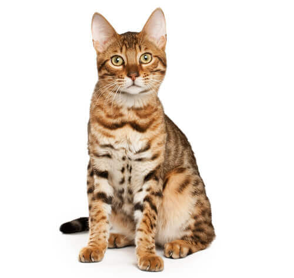

MoggyRas kucing kampung sebenarnya adalah ras moggy, mereka adalah keturunan dari Felis Silverstris Lybica yang merupakan kucing liar Afrika. Ras kucing kampung kini tak hanya memenuhi jalanan di Indonesia, tapi juga rumah-rumah dan hati orang-orang Indonesia. Kucing ini mungkin bukan yang menjadi favorit, tapi dengan daya tariknya tersendiri, kucing kampung tetap bisa eksis di dunia perkucingan. |

BengalKucing Bengal adalah ras kucing yang terkenal karena ciri khas bulu mereka yang mirip macan tutul. Dengan pola bulu yang eksotis dan warna yang mencolok, Kucing Bengal membuat siapa saja yang melihatnya terpesona. Mereka merupakan hasil dari persilangan antara kucing domestik dengan kucing hutan liar Asia (leopard cat). Hasilnya adalah kucing yang memiliki penampilan yang liar, tetapi kepribadian yang sangat ramah dan akrab. Kepribadian Kucing Bengal yang ramah dan aktif menjadikannya teman yang sempurna bagi mereka yang mencari kucing dengan karakter unik. Mereka sangat suka berinteraksi dengan pemiliknya dan bahkan bisa menjadi anggota keluarga yang akrab. |
PersiaMengutip dari The Cat Fanciers’ Association (CFA), kucing berbulu panjang atau long hair ini pertama kali ditemukan pada tahun 1684 SM. Namun, pada akhir abad ke 19, kucing ras ini mulai dikembangkan di Inggris dan Amerika Serikat. Namanya sendiri diambil dari asal dimana kucing ini ditemukan. Kucing persia memiliki karakter yang manis, lembut dan mudah berbaur dengan manusia. Selain itu juga termasuk kucing yang mudah untuk beradaptasi, maka tidak heran kalau kucing persia menduduki peringkat nomor satu sebagai kucing yang populer untuk dipelihara. Berbeda dengan ras kucing domestik lainnya, karakter alamiah dari jenis kucing ini adalah tenang dan pendiam, sehingga kucing satu ini lebih mudah untuk dikontrol. Kucing persia juga sangat responsif dan manja. Selain itu, kucing ini juga memiliki suara yang lembut bahkan nyaris tidak terdengar. |